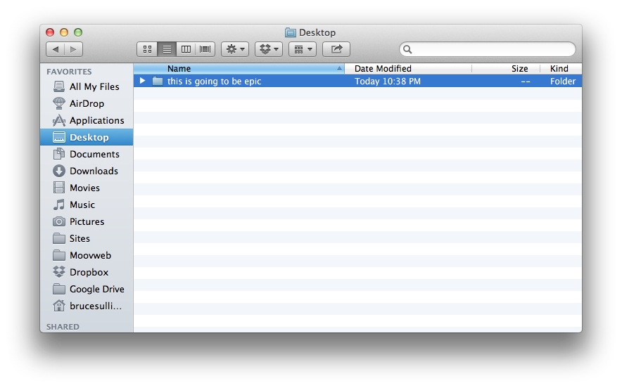
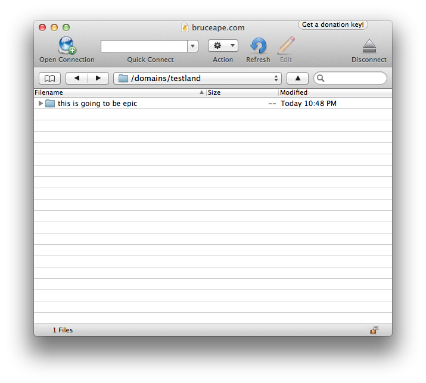
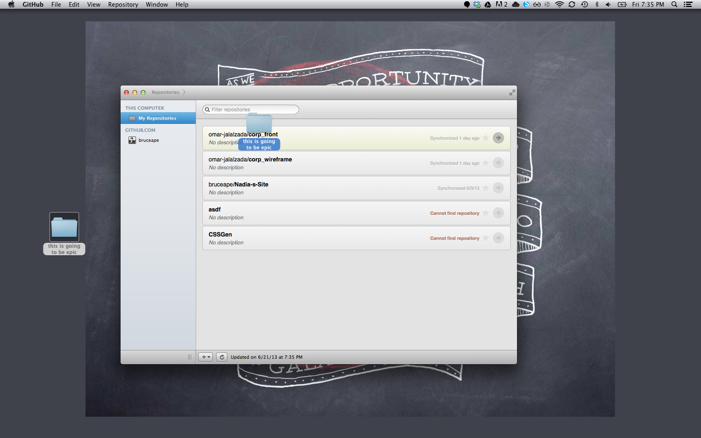
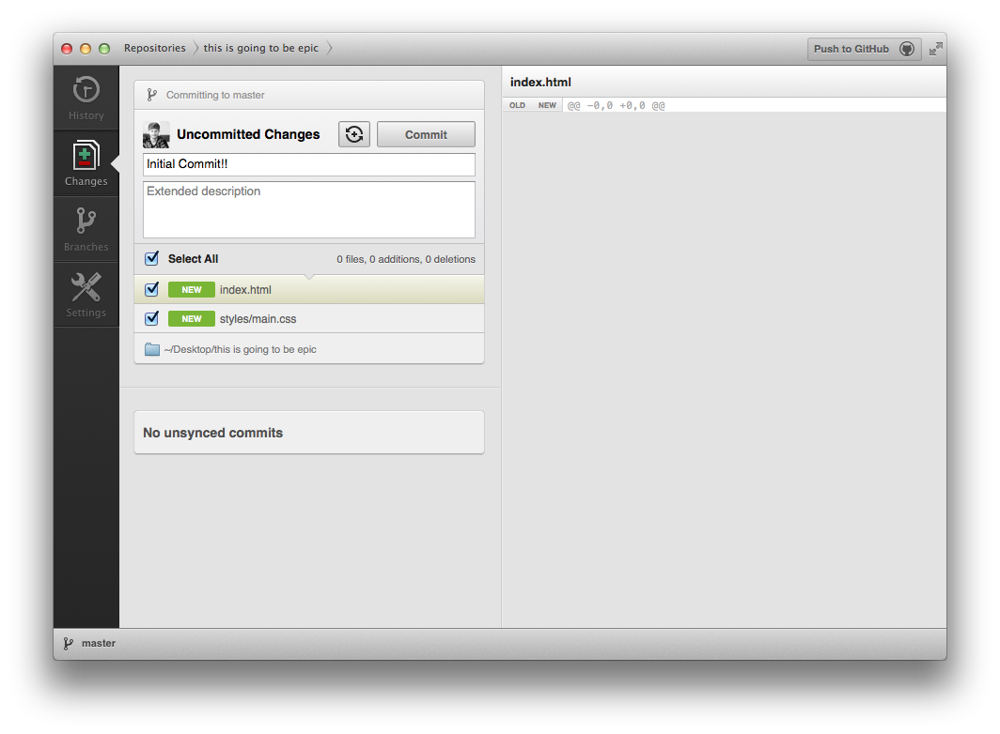
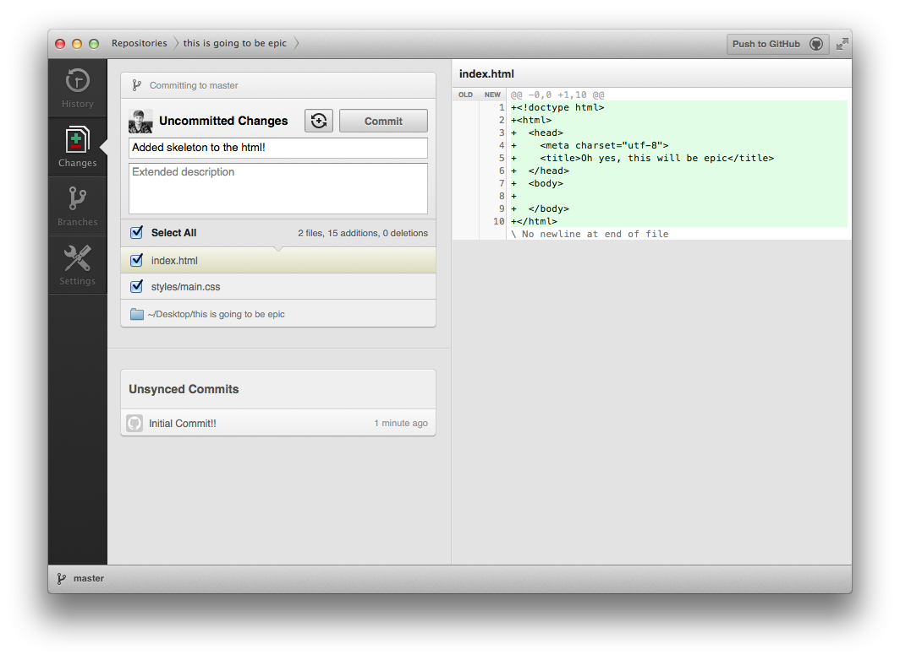
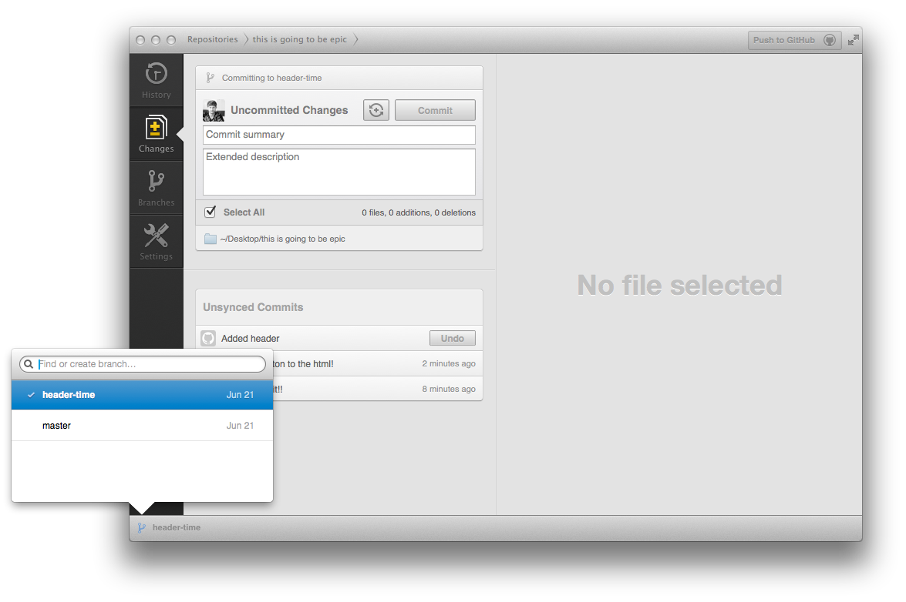
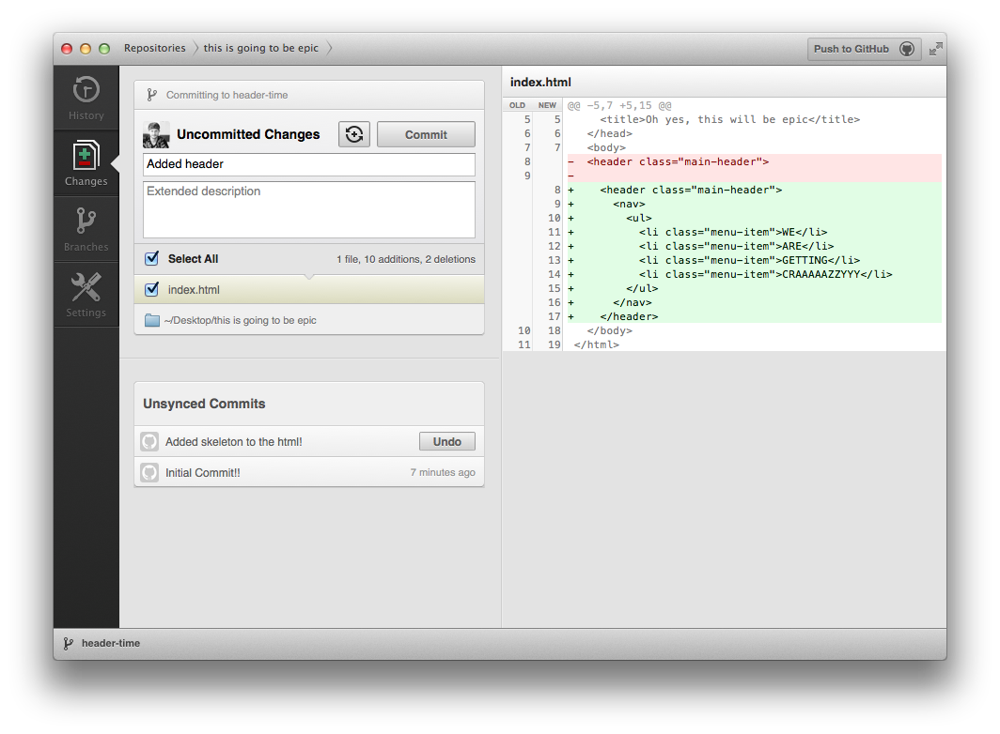
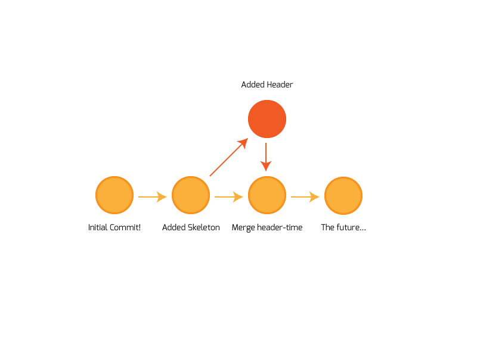

Git
Happy times with Version Control
Presented by Bruce R. Sullivan | Academy of Art July 2013
Who I am.
I am Bruce Sullivan. I am…
Moovweb
Let's talk workflow…
Starting out...
ಠ_ಠ
Scenario 2:

Scenario 3:

Is there a better way?
Why, yes. Yes there is.

What is Git?
Git is a Version Control System (VCS). VCS allows you to:
- Create a History
- Track changes
- Make checkpoints
- Make different versions
- Go back in time
How we're going to do things…
The Basics
↓
Github
↓
Web/Command Line
Git Workflow
Initial Repository
Initial Commit
Changes, and commit
Branch
Changes, and commit
Merge Branch
Push
$ git push

Summing things up…
Committing
- Make Changes
- Stage the Changes
- Commit
- ????
- Profit.
Branching
- Make a Branch
- Commit Changes
- Merge Branches
- ????
- Profit.
Push
$ git push
Questions?

People learn in lots of different ways.
Experiences is the best teacher.
Git Apps
Command Line
The Basics
# Changes the directory.
$ cd
# Goes up one directory.
$ cd ..
# Changes to the "images" folder inside of "git-repo" inside of "Desktop"
$ cd Desktop/git-repo/images
The Basics
# Lists all the files in the current directory
$ ls
# Lists all the files in the current directory...even hidden ones
$ ls -a
# Prints out the current directory
$ pwd
# Makes a directory called "brucerocks"
$ mkdir brucerocks
# Makes a blank file called "the-stars.html"
$ touch the-stars.html
SSH
# Secure Shell...zomg haxx
$ ssh username@yourserver.com
Git
#
# Makes whatever folder youre in into a Git repository
$ git init
# Checks to see what files have changed since the last commit
$ git status
# Add all the changes and commit them
$ git commit -am "Commit message"
# Push all your changes to the github
$ git push origin
# Pull all your changes from the main repository
$ git pull origin
Git
# Lists all the branches in the repository
#
$ git branch
# Goes to a certain branch
$ git checkout branchname
# Makes a new branch based off of the current one
$ git checkout -b branchname
# Merge the specified branch into the one you're in
$ git merge branchname
# Deletes specified branch
$ git branch -d branchname